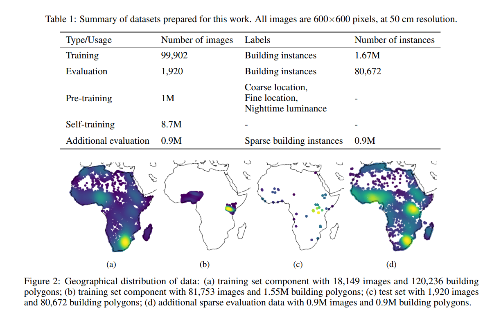
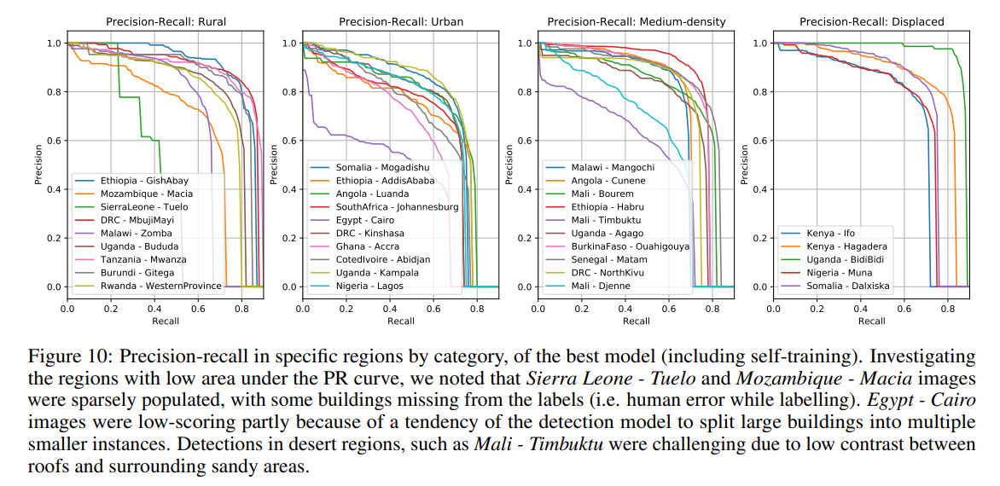

7 Classification 2
7.1 Summary
This week lecture continues to explain and evaluate other classification methods (object-based and sub-pixel) and accuracy assessment of classification outcomes. Two pre-classified models are discussed in the application section.
7.1.1 OBIA
Critique on pixel-based classification: Spatial autocorrelation (test/train) may influence the outcome of accuracy assessment (Tobler 1st Law). If not consider SA – model would be too good / high accuracy. SA could be solved by:
applying distance filter/metrics or Moran’s I to the test / train data
or classify the image through Object-based image analysis (OBIA).
Two parameters for OBIA:
Distance (between centroids/seeds)
Homogeneity/similarity of pixels around the centroids
The output would be features of the objects (e.g. mean of the pixel values) that look like art rather than imagery. OBIA is originally applied in medical and surgery (e.g. cancer detection).
7.1.2 Sub-pixel
Fraction of selected features per pixel > spectrally pure end-members
Cons: difficult to assess accuracy (no test/train split) > harden
Applications on pollution detection and % of vegetation
spectrally pure ENDMEMBER selection: library (), lab, points/polygon (one point), value specification
end-member * fraction >> unconstrained >> constrained (sum to one)
if multiple points = MESMA
7.1.3 Accuracy Assessment
Random sampling > test/train > model output > test output > matrix
PA (producer accuracy): \(\frac{TP}{TP+FN}\) == recall / sensitivity (correctly classified pixel vs. ground truth data)
- High PA: Low FN and High FP: e.g. predicted urban but actually other land cover type
- Error of omission = 100-PA
UA (user accuracy): \(\frac{TP}{TP+FP}\) == precision (correctly classified pixel vs. same class pixels as classified)
- High UA: High FN and Low FP: e.g. predicted other but actually urban
- Error of commission = 100-UA
OA (overall accuracy): (TP+FP+FN+TN)
PA and UA never both good: model with Low FN and Low FP does not exist. Since data is not balanced, changes in decision threshold of classification may vary the outcomes. Increasing FP (more predicted positive) > UA worsens > FN reduces > PA improves. The matrix are related and may change together. The trade-offs between the two make the ideal situation with high PA and high UA impossible.
Hence, one of them would be more important than the other under different scenarios and the one with higher relevance to the problem should be picked when analyzing accuracy and designing the model (Wilber, n.d.):
Recall/PA is important when we believe False Negatives are more important than False Positives (e.g. our problem of cancer detection).
Precision/UA is important when we believe False Positives are more important than False Negatives (e.g. spam detection).
7.1.3.1 F1 score
- F1 score
-
To solve the issue above with decision threshold, F1 score includes the information of both PA and UA in one single coefficient. \(\frac{TP}{TP+\frac{1}{2}∗(FP+FN)}\)
When PA and UA are similarly well-performed, the F1 and Accuracy are also highest.
Critiques on F1 score:
Not considering TN
Assuming UA and PA equally important
Other matrix to assess accuracy: calibration, popular diagnostic tools (specificity, likelihood ratios, etc.), expectation frameworks, Receiver Operating Characteristic Curve (ROC), Area Under the Receiver Operator Characteristic Curve (AUROC) (popular for binomial model).
7.1.3.2 Kappa
- Kappa coefficient
-
The accuracy of an image compared to the results by chance\(k=\frac{p_o−p_e}{1−p_e}\)
\(p_o\): the proportion of cases correctly classified (accuracy)
\(p_e\): expected cases correctly classified by chance
Critiques on Kappa coefficient:
different definitions by authors in terms of good Kappa
different accuracy can have different ranges of kappa
7.1.3.3 Cross validation
Data-splitting: based on simple, stratified, random selection.
Repeated selection (resampling by bootstrapping): to compute the sampling variability of the accuracy metric (changing the split) (Karasiak et al. 2022)
Find the average of different scenarios to test how generalisable the model is
Critique on averaging accuracy:
- Randomly distributed points for testing may have spatial autocorrelation with nearby training data > influencing overestimating the accuracy / overfitting the model.
Spatial cross validation
To mitigate issue with Spatial autocorrelation in Cross validation, randomly distributed clusters of points (clustering through Moran’s I, DBSCAN, Distance metrics..) are selected for testing (Lovelace, Nowosad, and Muenchow 2019).
- reference data are also split into subsets like in cross validation but the number of subsets can vary (k-fold) (Karasiak et al. 2022).
- k-fold > random sample > > best values of C and gamma for SVM > fold >> ML3 IN R > GEE not good at data analysis but for remote sensing data
mlr3 to split data for spatial CV:
3 stages: 1) task: data specification (including response and predictor variables) and the model type (such as regression or classification). 2) learner defines the specific learning algorithm that is applied to the created task. 3) resampling approach assesses the predictive performance of the model, i.e., its ability to generalize to new data.
Detailed example see (Lovelace, Nowosad, and Muenchow 2019).
Leave one out (for everything except one point) – more extreme / computationally extensive
Selecting data for training / testing / accuracy:
>> reproducible (same model for different years data) == (choose land that not change to much – pseudo-invariant features) / (manual selection of ROI) / (choose same parcel/feature from different years = generalizable) == no fixed rules
7.1.4 Question
- What’s the neighborhood size (shouldn’t it be 100 if its 2*seed size)? When calculating std, why max size should be the same as NS?
7.2 Application
Below are some examples of pre-classified data that could be imported in GEE.
7.2.1 Dynamic world
Near real time data at 10m resolution (Sentinel-2 with 2-5 days revisit)
Process: World / region / biomes > experts / non-experts to label training pixels (5x5) > pre-processing (> TOA > rotate > band math/ratioing) > normalisation (log) > classification (CNN)
Critique: Blobbing – since ppl/users train data + CNN (deep learning, moving window of filtering..)
Weird: worse the resolution of sentinel
Accuracy (confusion matrix, but…)
7.2.2 Google open building data
50cm high-resolution
Currently constrains to Africa, South Asia and South-East Asia locations
Include building info like outlines, footprints on the ground, confidence score (on if this is a building / accuracy), the centroid of the building. (not having info like building typology, address, and other details beyond geometry.)
7.2.2.1 Application
Thoughts on applications suggested by developers:
Population mapping: largely related to the population estimates based on building block. Estimating population based on building outline seems less convincing as the building height data is not assessed. This could be solved by combining the method of detecting building shades from satellite imagery and sample building height annotations with longitude, latitude, and elevation from the ICESat-2, ATL03 photons (Zhao et al. 2023). Hence, a 3D building data can be used to estimate population more accurately. However, the population density per building may vary spatially and over time, influenced by the building functions. Offices for instance should be omitted during prediction. The detailed land use type per building may be beyond the scope of remote sensing data. That said, population estimation for informal settlements can be valuable, which is not included in the census data.
Humanitarian response: the location and density of settlements could be used to evaluate the risk zones and potential loss due to natural disasters, integrated with deep learning from data like past disaster events, social media, and weather reports to forecast the affected areas and consolidate early-warning system. Te detailed methods may subject to the types of disasters (flooding/earthquake/landslide/volcanic eruptions..). Corresponding interventions (e.g. relocation of hospitals and residence within the risk zones) in relation to the local demographics of vulnerable groups can be integrated to reduce risks, complying to the Sendai Framework for Disaster Risk reduction 2015-2030. Nevertheless, the LULC classifications may already achieve this goal, albeit without building outline..
Addressing systems & Statistical indicators: the location of buildings can be used to simulate transport demands and routing, hence planning a more robust transport system.
Other possible uses of the data:
- Planning support: The space between buildings / street width could be useful for analyzing the environmental conditions in urban public realm, guiding regulations on building heights – narrow streets with high buildings should be avoided, increasing wind speed and reducing daylight penetration.
7.2.2.2 Accuracy
The accuracy is enhanced through the novel method using U-Net Model (mixup, self-training, distance weighting with Gaussian convolutions, and residual decoder blocks) (Sirko et al., n.d.). For randomly selected test data (Figure2c), the areas with potential bias are omitted, including those with vast rural land and empty area (.ibid).

U-Net Model originates from biomed image semantic segmentation (Ronneberger, Fischer, and Brox 2015; Li et al. 2021), having wide range of applications in different fields, outperforming the original sliding-window convolutional network.

The performance of open building data can be accessed from the confidence score. However, there is difference in the performance spatially. Some areas like single building in rural area and dessert terrain can have lower accuracy (Sirko et al., n.d.). In urban areas, large buildings may be split into smaller ones, with most cases seen in Egypt - Cairo (ibid.).
